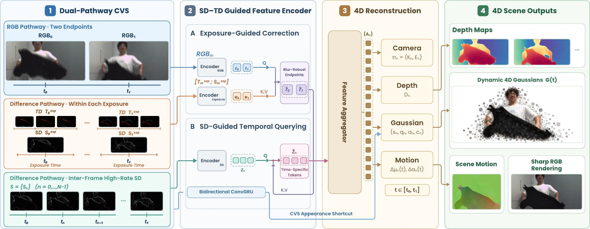

Complementary vision · Dynamic 3D reconstruction
Deblur4D
Feed-Forward 4D Reconstruction from
Blurry RGB and Complementary Vision
From two blurry frames to a sharp, dynamic 3D scene.
Recovering camera poses, depth, and scene motion with synchronized RGB, TD, and SD measurements.
From blur to 4D.

Motion blur and large inter-frame displacements make high-speed 4D reconstruction challenging. Deblur4D combines standard RGB frames with hardware-synchronized spatial differences (SD) and temporal differences (TD) from a Complementary Vision Sensor. A single feed-forward framework jointly recovers sharp appearance, camera poses, depth, and continuous scene motion.
Resolve exposure blur
Intra-exposure TD and SD guide the recovery of blur-robust endpoint features.
Recover motion in between
High-rate SD queries the endpoint features to reconstruct intermediate moments.
Explore the scene in 3D
Dynamic Gaussians enable sharp rendering across both time and viewpoint.
Captured with a Complementary Vision Sensor
Real-world results.
Each scene alternates two passes: one with two smooth camera orbits in 2.08 seconds at the midpoint, followed by one uninterrupted pass. RGB, TD, and SD stay frozen during the orbit.
Explore our motion & depth predictionsHover over any image for a synchronized 4× magnifier across all eight views. Move away or press Esc to dismiss.
All clips retain the original 12 FPS presentation cadence. The camera orbit holds scene time fixed at the midpoint.
Beyond sharp appearance · Ours
Motion and depth, recovered.
Scene motion from waving fabric and a moving cushion. Depth from a spinning pinwheel and disc. Each pair shows synchronized inputs on the left and Deblur4D predictions on the right: the input sequence starts with RGB, follows intermediate SD measurements, and ends with RGB. Both sides retain the same 13 frames at 12 FPS.
The reconstruction framework
Complementary signals, unified geometry.
First deblur the endpoint representations; then interpolate temporally dense visual tokens. A foundation aggregator decodes cameras, depth, Gaussian attributes, and scene flow into a consistent 4D representation.
Inside a single feed-forward pass
Two blurry frames.
An entire moving world.
Real sensor inputs and model predictions. Tokens and camera glyphs are schematic; the 3D point preview uses predicted depth and world-space scene flow.
View the complete architecture diagram ↗

Training combines 3D-annotated datasets with unlabeled video, using foundation-model pseudo-labels and differentiable rendering to improve generalization to real captures.